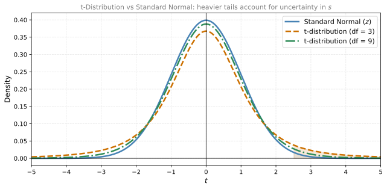
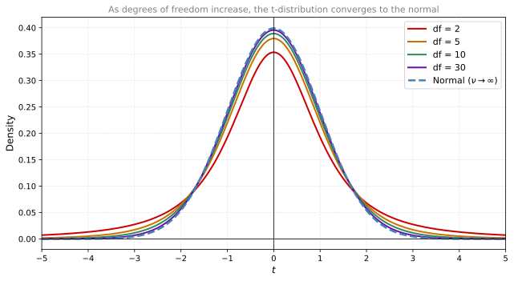
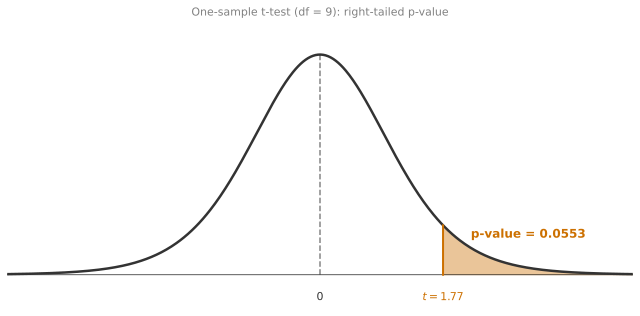
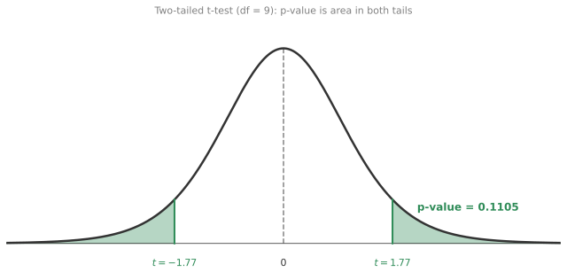
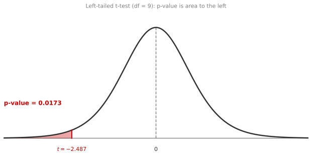
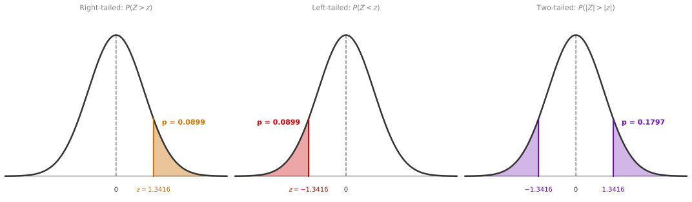

t-Distribution and t-Tests
statistics
In the confidence intervals section, you first encountered the t-distribution as a replacement for the normal distribution when the population standard…
In the confidence intervals section, you first encountered the t-distribution as a replacement for the normal distribution when the population standard deviation \(\sigma\) is unknown. Now, in the context of hypothesis testing, the same idea returns. You will see how the t-distribution shapes the way you compute test statistics and make decisions when \(\sigma\) is not available.
From z-Statistic to t-Statistic
Return to the example from the hypothesis testing page: you sample the heights of 10 eighteen-year-olds (in inches):
\[ 66.75, \; 70.24, \; 67.19, \; 67.09, \; 63.65, \; 64.64, \; 69.81, \; 69.79, \; 73.52, \; 71.74 \]
Each measurement \(X_i\) is drawn independently from the same population, so you can model them as i.i.d. from a Gaussian:
\[ X_i \overset{\text{i.i.d.}}{\sim} \mathcal{N}(\mu, \sigma^2) \]
Because the \(X_i\) are Gaussian, the sample mean also follows a Gaussian distribution with the same mean but a smaller standard deviation (divided by \(\sqrt{n}\)):
\[ \bar{X} = \frac{1}{10}\sum_{i=1}^{10} X_i \sim \mathcal{N}\left(\mu, \; \frac{\sigma^2}{10}\right) \]
This is fine if you know both \(\mu\) and \(\sigma\). When you know \(\sigma\), you can standardize the sample mean to get the z-statistic:
\[ z = \frac{\bar{X} - \mu}{\sigma / \sqrt{n}} \]
This quantity follows a standard normal distribution \(\mathcal{N}(0, 1)\), and you can use it directly to compute p-values and critical values. That is the approach you used throughout the hypothesis testing page.
But here is the problem: in practice, you almost never know \(\sigma\). If someone asks you “what is the true standard deviation of heights for all eighteen-year-olds in the country?”, you probably cannot answer that. You only have your sample. So the natural thing to do is estimate \(\sigma\) from your data using the sample standard deviation \(s\):
\[ s = \sqrt{\frac{1}{n-1} \sum_{i=1}^{n} (x_i - \bar{x})^2} \]
Recall from the sample variance section that you divide by \(n - 1\) (not \(n\)) to get an unbiased estimate. Now replace \(\sigma\) with \(s\) in the standardization formula:
\[ t = \frac{\bar{X} - \mu}{s / \sqrt{n}} \]
This new quantity is called the t-statistic. It looks almost identical to the z-statistic, but with one crucial difference: the denominator uses \(s\) instead of \(\sigma\).
Why the t-Statistic Does Not Follow a Normal Distribution
You might wonder: if \(s\) is an estimate of \(\sigma\), maybe the t-statistic is “close enough” to a standard normal? Unfortunately, no. The reason is subtle but important.
The z-statistic has randomness only in the numerator (\(\bar{X}\) is random because it depends on which people you sampled). The denominator \(\sigma / \sqrt{n}\) is a fixed, known constant. So you are dividing a random variable by a constant, which keeps the resulting distribution normal.
The t-statistic, on the other hand, has randomness in both the numerator and the denominator. The sample standard deviation \(s\) is itself a random variable that changes every time you collect a new sample. You are dividing one random quantity by another random quantity. This introduces extra variability, and the resulting distribution is no longer exactly normal.
The distribution that the t-statistic actually follows is the Student’s t-distribution (often just called the t-distribution). You already met this distribution in the confidence intervals section, so its shape should look familiar: bell-shaped and symmetric, just like the normal, but with heavier tails.
Those heavier tails are not an accident. They account for the extra uncertainty introduced by estimating \(\sigma\) with \(s\). Think of it this way: because \(s\) is an imperfect estimate of \(\sigma\), sometimes your denominator is too small (making \(t\) large) and sometimes it is too big (making \(t\) small). This variability in the denominator “spreads out” the distribution compared to the normal, pushing more probability mass into the tails.
In practical terms, heavier tails mean that extreme values of the t-statistic are more likely than they would be under a normal distribution. This means that when you use the t-distribution for hypothesis testing, you need more evidence (a larger observed \(t\) value) to reject \(H_0\) compared to what you would need with the z-test. The t-distribution is more conservative, and that conservatism protects you from making overconfident conclusions based on a noisy estimate of \(\sigma\).
Degrees of Freedom
The t-distribution has a single parameter called the degrees of freedom, typically denoted \(\nu\) (the Greek letter “nu”). For the one-sample t-test, the degrees of freedom are:
\[ \nu = n - 1 \]
where \(n\) is your sample size. In the height example with 10 people, \(\nu = 10 - 1 = 9\).
The degrees of freedom control how heavy the tails are. Here is the key relationship:
- Small \(\nu\) (few samples): The tails are very heavy. You have a lot of uncertainty about \(\sigma\), so the distribution is spread out.
- Large \(\nu\) (many samples): The tails get thinner, approaching the normal distribution. Your estimate \(s\) becomes very reliable, so the extra uncertainty shrinks away.
Notice that \(\nu\) depends only on the sample size. It does not depend on the population mean \(\mu\) or the population variance \(\sigma^2\). Whether you are measuring heights, temperatures, or exam scores, the degrees of freedom are always \(n - 1\).

By the time you reach about 30 degrees of freedom (so \(n \approx 31\)), the t-distribution and the normal distribution are practically indistinguishable. This is why a common rule of thumb in statistics says: if your sample size is 30 or more, you can often use the normal distribution even when \(\sigma\) is unknown, because the t-distribution is so close to normal at that point. But for smaller samples, the distinction really matters, and using the normal distribution would lead you to underestimate the width of confidence intervals and reject \(H_0\) too easily.
Review Questions
1. You collect 10 height measurements and want to test whether the population mean differs from 66.7 inches, but you do not know \(\sigma\). What statistic do you use, and what distribution does it follow?
TipAnswer
You use the t-statistic: \(t = \frac{\bar{X} - \mu_0}{s / \sqrt{n}}\). It follows a t-distribution with \(\nu = n - 1 = 9\) degrees of freedom.
2. Why does replacing \(\sigma\) with \(s\) in the standardization formula change the distribution from normal to t?
TipAnswer
When \(\sigma\) is known, only the numerator is random (the sample mean varies across samples). When \(\sigma\) is replaced by \(s\), both the numerator and denominator are random. Dividing one random quantity by another introduces additional variability, resulting in a distribution with heavier tails than the normal.
3. A researcher has a sample of size \(n = 50\). Should they use a z-test or a t-test?
TipAnswer
If \(\sigma\) is known, they should use a z-test. If \(\sigma\) is unknown (which is the typical situation), they should use a t-test with \(\nu = 49\) degrees of freedom. In practice, at \(n = 50\) the t-distribution is so close to the normal that the results will be nearly identical either way.
t-Tests
Now that you understand why the t-distribution appears, let us see how to use it for hypothesis testing. The procedure is almost identical to what you learned in the hypothesis testing section with the z-test. The only differences are: (1) you use \(s\) instead of \(\sigma\), and (2) you compare the test statistic to the t-distribution instead of the normal.
One-Sample t-Test
Suppose you want to test whether the mean height of current eighteen-year-olds differs from 66.7 inches. You have the \(n = 10\) measurements from above, which give a sample mean \(\bar{x} = 68.442\) and sample standard deviation \(s = 3.113\).
Step 1: State the hypotheses.
\[ H_0: \mu = 66.7 \qquad H_1: \mu > 66.7 \]
Step 2: Compute the t-statistic.
\[ t = \frac{\bar{x} - \mu_0}{s / \sqrt{n}} = \frac{68.442 - 66.7}{3.113 / \sqrt{10}} = \frac{1.742}{0.984} = 1.770 \]
Step 3: Find the p-value.
Under \(H_0\), the t-statistic follows a t-distribution with \(\nu = 9\) degrees of freedom. The p-value for the right-tailed test is \(P(T > 1.770)\) where \(T \sim t_9\).

The p-value is approximately 0.0552. Since \(0.0552 > 0.05\), you fail to reject \(H_0\) at the 5% significance level.
Step 4: Interpret.
With this sample, there is not enough evidence to conclude that the mean height has increased beyond 66.7 inches. Notice something interesting: in the hypothesis testing section, the same sample mean of 68.442 did lead to rejection when you used the z-test with known \(\sigma = 3\). Now, with unknown \(\sigma\) and \(s = 3.113\), the t-test does not reject. This is the t-distribution being more conservative. Because you are less certain about the true spread of the data, the test demands stronger evidence before it lets you reject \(H_0\).
Two-Tailed t-Test
Now repeat the process for the two-tailed test. The hypotheses become:
\[ H_0: \mu = 66.7 \qquad H_1: \mu \neq 66.7 \]
The observed t-statistic is the same (\(t = 1.770\)), but the p-value calculation changes. In a two-tailed test, you care about extreme values in both directions, so the p-value is:
\[ \text{p-value} = P(|T| > |t_{\text{obs}}|) = P(|T| > 1.770) \]
Because the t-distribution is symmetric, this equals twice the right-tail probability.

The p-value is 0.1103, which is exactly double the right-tailed p-value (\(0.0552 \times 2 = 0.1103\)). Since \(0.1103 > 0.05\), you again fail to reject \(H_0\). There is not enough evidence to conclude the mean has changed in either direction.
Left-Tailed t-Test
Now suppose you had collected a different sample with a mean of \(\bar{x} = 64.252\) (below the historical 66.7), and the same sample standard deviation \(s = 3.113\). You want to test whether the mean has decreased:
\[ H_0: \mu = 66.7 \qquad H_1: \mu < 66.7 \]
The t-statistic is:
\[ t = \frac{64.252 - 66.7}{3.113 / \sqrt{10}} = \frac{-2.448}{0.984} = -2.487 \]
The p-value for a left-tailed test is \(P(T < -2.487)\), the area to the left of the observed statistic.

The p-value is 0.0173. Since \(0.0173 < 0.05\), you reject \(H_0\) and conclude that the population mean has decreased. With this hypothetical sample, the evidence is strong enough to overcome the t-distribution’s conservatism.
Key Observation
Notice how the same dataset (\(\bar{x} = 68.442\)) led to rejection with the z-test (p = 0.033) but not with the t-test (p = 0.0552). The uncertainty from not knowing \(\sigma\) cost you the ability to reject in this borderline case. This is exactly the price you pay for honesty: if you do not know the population spread, the test accounts for that uncertainty by being harder to satisfy.
Comparing z-Test and t-Test
Here is a side-by-side comparison to make the difference concrete:
| z-Test | t-Test | |
|---|---|---|
| When to use | \(\sigma\) is known | \(\sigma\) is unknown |
| Test statistic | \(z = \frac{\bar{x} - \mu_0}{\sigma / \sqrt{n}}\) | \(t = \frac{\bar{x} - \mu_0}{s / \sqrt{n}}\) |
| Distribution | Standard Normal \(\mathcal{N}(0,1)\) | Student’s t with \(\nu = n-1\) |
| Tails | Lighter (less conservative) | Heavier (more conservative) |
| Large \(n\) behavior | Always the same | Converges to z-test |
In practice, you will use the t-test far more often than the z-test, because knowing \(\sigma\) exactly is rare. The z-test is mostly a teaching tool that helps build intuition before introducing the t-test.
Review Questions
4. Using the same data (\(\bar{x} = 68.442\), \(n = 10\), \(\mu_0 = 66.7\)), the z-test with \(\sigma = 3\) rejects \(H_0\), but the t-test with \(s = 3.113\) does not. Why do they disagree?
TipAnswer
Two factors contribute. First, \(s = 3.113\) is larger than \(\sigma = 3\), which increases the denominator and shrinks the test statistic (\(t = 1.770\) vs \(z = 1.836\)). Second, the critical values from the t-distribution (with 9 degrees of freedom) are larger than those from the normal distribution, meaning the t-test demands a more extreme statistic to reject. Both effects work against rejection.
5. If you increase the sample size from 10 to 100, what happens to the t-test?
TipAnswer
With \(n = 100\), the degrees of freedom increase to 99. The t-distribution with 99 degrees of freedom is nearly identical to the standard normal. The sample standard deviation \(s\) also becomes a more precise estimate of \(\sigma\) (by the law of large numbers). So the t-test and z-test would give essentially the same result for large samples.
6. A student says: “I always use the z-test because it is simpler.” What is wrong with this approach?
TipAnswer
If \(\sigma\) is unknown (which is almost always the case in practice), using the z-test means treating \(s\) as if it were \(\sigma\) and using the normal distribution. This ignores the extra uncertainty in estimating \(\sigma\), making the test too liberal. It will reject \(H_0\) more often than it should, inflating the actual Type I error rate above the intended \(\alpha\).
Test for Proportions
Everything so far has been about testing a population mean. But sometimes the quantity of interest is a proportion: What fraction of emails are spam? What percentage of patients respond to a treatment? What is the probability a coin lands heads?
It turns out you can apply the same hypothesis testing framework to proportions, using the Central Limit Theorem to approximate the test statistic’s distribution.
Coin Fairness Example
Imagine you have a coin and you do not know whether it is fair. The proportion you care about is \(p = P(\text{Heads})\). You want to test:
\[ H_0: p = 0.5 \qquad H_1: p \neq 0.5 \]
You toss the coin 20 times and observe 7 heads. Your random variable is \(X =\) “number of heads in 20 flips,” which follows a Binomial(20, \(p\)) distribution. A natural estimate for the proportion is the relative frequency:
\[ \hat{p} = \frac{X}{n} = \frac{7}{20} = 0.35 \]
The sample proportion is below 0.5, but is the difference large enough to conclude the coin is unfair? Or could 7 heads out of 20 easily happen by chance with a fair coin?
Building the Test Statistic
By the Central Limit Theorem, for large enough \(n\), the sample proportion \(\hat{p}\) is approximately normal:
\[ \hat{p} \;\approx\; \mathcal{N}\left(p, \; \frac{p(1-p)}{n}\right) \]
Standardizing this gives a z-statistic:
\[ Z = \frac{\hat{p} - p}{\sqrt{p(1-p)/n}} \cdot 1 = \frac{X/n - p}{\sqrt{p(1-p)/n}} \;\approx\; \mathcal{N}(0, 1) \]
Under \(H_0\) (where \(p = p_0 = 0.5\)), this becomes:
\[ Z = \frac{X/n - 0.5}{\sqrt{0.5(1-0.5)/n}} = \frac{X/n - 0.5}{0.5/\sqrt{n}} \;\sim\; \mathcal{N}(0, 1) \]
Notice that you use the hypothesized value \(p_0\) in the denominator (not \(\hat{p}\)). This is because you are computing the distribution of the test statistic under the assumption that \(H_0\) is true.
Computing the p-Value
With \(x = 7\), \(n = 20\), and \(p_0 = 0.5\):
\[ z = \frac{7/20 - 0.5}{0.5 / \sqrt{20}} = \frac{0.35 - 0.5}{0.1118} = \frac{-0.15}{0.1118} = -1.3416 \]
Since this is a two-tailed test, the p-value is the probability that \(|Z|\) exceeds \(|{-1.3416}| = 1.3416\):
\[ \text{p-value} = P(|Z| > 1.3416) = 0.1797 \]

Since \(0.1797 > 0.05\), you do not have enough evidence to reject the null hypothesis that \(p = 0.5\). Getting 7 heads out of 20 is not unusual enough to conclude the coin is unfair.
General Formula
In general, let:
- \(p\) = population proportion (the true probability of being in a category)
- \(p_0\) = hypothesized proportion under \(H_0\)
- \(x\) = observed count in the category
- \(n\) = sample size
- \(\hat{p} = x/n\) = sample proportion
The test statistic is:
\[ Z = \frac{\hat{p} - p_0}{\sqrt{p_0(1 - p_0) / n}} \]
and the observed value is:
\[ z = \frac{x/n - p_0}{\sqrt{p_0(1 - p_0) / n}} \]
The p-value depends on the type of test:
| Test type | Hypotheses | p-value |
|---|---|---|
| Right-tailed | \(H_0: p = p_0\) vs. \(H_1: p > p_0\) | \(P(Z > z)\) |
| Left-tailed | \(H_0: p = p_0\) vs. \(H_1: p < p_0\) | \(P(Z < z)\) |
| Two-tailed | \(H_0: p = p_0\) vs. \(H_1: p \neq p_0\) | \(P(|Z| > |z|)\) |
Conditions for Validity
The normal approximation to the binomial works well only under certain conditions. Before running a proportion test, you should verify:
Independence: The population must be at least 20 times larger than the sample (so that sampling without replacement behaves like sampling with replacement). For experiments like coin flips, independence is built into the design.
Binary outcomes: Each individual either belongs to the category or does not. There are no partial memberships.
Large enough counts: Both \(np_0 > 10\) and \(n(1 - p_0) > 10\) must hold. This ensures the normal approximation to the binomial is accurate under \(H_0\).
In the coin example: \(n p_0 = 20 \times 0.5 = 10\) and \(n(1 - p_0) = 20 \times 0.5 = 10\). These are borderline (just meeting the threshold), so the approximation is acceptable but not ideal. With more flips (say \(n = 50\)), the approximation would be much better.
Review Questions
7. You flip a coin 100 times and get 60 heads. Test whether the coin is biased toward heads at \(\alpha = 0.05\).
TipAnswer
\(H_0: p = 0.5\), \(H_1: p > 0.5\) (right-tailed). The test statistic is \(z = \frac{60/100 - 0.5}{\sqrt{0.5 \times 0.5 / 100}} = \frac{0.10}{0.05} = 2.0\). The p-value is \(P(Z > 2.0) = 0.0228\). Since \(0.0228 < 0.05\), you reject \(H_0\) and conclude the coin is biased toward heads.
8. In the coin fairness example, we got 7 heads out of 20 flips and failed to reject \(H_0\). If instead we got 7 heads out of 200 flips (\(\hat{p} = 0.035\)), would the conclusion change?
TipAnswer
Yes. With \(n = 200\): \(z = \frac{0.035 - 0.5}{\sqrt{0.5 \times 0.5 / 200}} = \frac{-0.465}{0.0354} = -13.14\). The p-value is essentially 0. You would strongly reject \(H_0\). A larger sample makes even moderate deviations from \(p_0\) detectable.
9. Why do you use \(p_0\) (not \(\hat{p}\)) in the denominator of the z-statistic for proportions?
TipAnswer
Because the test statistic measures how extreme your data is under the assumption that \(H_0\) is true. Under \(H_0\), the true proportion is \(p_0\), so the standard deviation of \(\hat{p}\) is \(\sqrt{p_0(1-p_0)/n}\). Using \(\hat{p}\) in the denominator would give a different (and incorrect) reference distribution.
10. A company claims that their new energy drink decreases reaction times. To investigate this claim, a researcher conducts a hypothesis test using a sample of 40 participants. The average reaction time in the sample is 0.95 seconds, with a standard deviation of 0.12 seconds. The company states that the average reaction time without their energy drink is 1.05 seconds. Assuming a significance level of 0.05, what is the test statistic for this hypothesis test?
- -5.27
- -2.73
- 2.73
- 5.27
TipAnswer
a. The claim is that the drink decreases reaction time, so \(H_1: \mu < 1.05\) (left-tailed). The test statistic is \(t = \frac{\bar{x} - \mu_0}{s/\sqrt{n}} = \frac{0.95 - 1.05}{0.12/\sqrt{40}} = \frac{-0.10}{0.01897} = -5.27\).
11. Based on the scenario in question 10, which distribution would you use to find p-values for different levels of significance?
- Standard normal distribution.
- t-Student distribution with 40 degrees of freedom.
- Normal distribution with \(\mu = 0.95\) and \(\sigma = 0.12\).
- t-Student distribution with 39 degrees of freedom.
TipAnswer
d. Since the population standard deviation \(\sigma\) is unknown and we use the sample standard deviation \(s = 0.12\), the test statistic follows a t-distribution. The degrees of freedom are \(n - 1 = 40 - 1 = 39\). Option a would only be correct if \(\sigma\) were known. Option b uses the wrong degrees of freedom. Option c describes the sampling distribution of \(\bar{X}\), not the test statistic.
Summary
| Concept | Description |
|---|---|
| z-statistic | \(\frac{\bar{X} - \mu}{\sigma / \sqrt{n}}\), used when \(\sigma\) is known; follows \(\mathcal{N}(0,1)\) |
| t-statistic | \(\frac{\bar{X} - \mu}{s / \sqrt{n}}\), used when \(\sigma\) is unknown; follows \(t_{\nu}\) |
| Heavier tails | The t-distribution has more probability in the tails, reflecting uncertainty in \(s\) |
| Degrees of freedom (\(\nu\)) | \(n - 1\) for a one-sample t-test; controls tail heaviness |
| Convergence | As \(\nu \to \infty\) (large \(n\)), the t-distribution approaches the normal |
| Rule of thumb | At \(n \geq 30\), the t and normal distributions are nearly identical |
| Conservatism | The t-test requires more extreme evidence to reject \(H_0\) compared to the z-test |
| Proportion test statistic | \(Z = \frac{\hat{p} - p_0}{\sqrt{p_0(1-p_0)/n}}\), follows \(\mathcal{N}(0,1)\) under \(H_0\) |
| Proportion validity conditions | \(np_0 > 10\), \(n(1-p_0) > 10\), and independence |